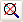

Charting control toolbar
This toolbar allows your end-users to print and/or preview the chart,
change the magnification of the charted data, rotate the chart and if
necessary chart additional data, amongst other actions.
Note: Enable the
(Appearance) ToolbarVisible property
of this charting control to display this toolbar. The appearance of certain
tools are also controlled by Boolean properties
Tools that apply to all charting controls:
- Zoom
in 10% : This "increases the magnification"
of the data by reducing the current scaling by 10%.
- Zoom
out 10% : This "decreases the magnification"
of the data by increasing the current scaling by 10%.
- Zoom
home

: This returns to the original or default
scaling thereby cancelling any zooming effects.
- Rotate
chart : This toggle-button, when enabled allows
you to rotate the chart by clicking and dragging the mouse pointer.
- Print
Setup and Preview : This displays the Page Setup
to configure the print settings and then displays a preview of the current
page, which you can immediately print.
Note1: If the
previewed chart contains a data legend, this is not previewed even though
it is printed.
Note2: Enable the (Toolbar)
AllowPrintPreview
property to enable this toolbar button, if set to False this button is disabled (grayed out).
- Print
chart : This selects the required printer and prints
the chart, using default printing settings, unless the chart is previewed
first.
Note: Enable the (Toolbar)
AllowPrint
property to enable this toolbar button, if set to False this button is disabled (grayed out).
- View
chart in 3D mode
 : This toggle-button, either enables
or disables the three dimensional view of the chart.
: This toggle-button, either enables
or disables the three dimensional view of the chart.
- Export Chart
: This exports
the current chart as an image file and/or to export the current chart
configuration settings as a template file(.ten) and/or to export the charted
data to a file. For details, see Exporting charts.
Note: Enable the (Toolbar)
ExportChartButtonVisible property to display
this toolbar button.
- Import Chart : This imports
a chart configuration settings template file which configures the chart
accordingly. For details, see Importing chart templates.
Note: Enable the (Toolbar)
ImportChartButtonVisible property to display
this toolbar button.
- Runtime Axis Configuration
 : This enables users to change the scaling, position and axis ticks of the axes of
the chart in runtime mode. For details, see .
: This enables users to change the scaling, position and axis ticks of the axes of
the chart in runtime mode. For details, see .
- Runtime
Configuration : This enables users to add values
to the chart in runtime mode. For details, see Configuring
charted series at runtime.
Note1: Enable the (Toolbar)
ViewButtonEnable property to display
this toolbar button.
Note2: These configuration
changes will ONLY be saved if the (Behavior) ViewName
property is NOT empty.
- Help
: This displays the help topic for this charting control.
Note: Enable the (Toolbar)
HelpButtonVisible property to display
this toolbar button.
 Tools that specifically apply to Line and XYPlot
charting controls:
most of these tools are used when the chart is trending live data as they
allow users to move back and forward between the historical and real time
data.
Tools that specifically apply to Line and XYPlot
charting controls:
most of these tools are used when the chart is trending live data as they
allow users to move back and forward between the historical and real time
data.
Note: The
Interval and Timespan properties are typically configured in the Time Details tab of the Time Details dialog.
- Page
Left
 or Page Right : This moves the
“window” of displayed data left (or backward in time) or right (or forward in time) by the period of time specified
by the current width of the chart (i.e. by the chart Timespan property).
or Page Right : This moves the
“window” of displayed data left (or backward in time) or right (or forward in time) by the period of time specified
by the current width of the chart (i.e. by the chart Timespan property).
Note1: The current charting
width is specified by the TimeSpan property. For details, see the
TimeInfo property configuration in Important
charting control properties.
Note2: Enable the (Toolbar)
PageLeftVisible and PageRightVisible
properties to display these toolbar buttons.
- Scroll Left
 or Scroll Right
or Scroll Right  : This moves the “window”
of displayed data left (or backward in time) or right (or forward in time) by the period of time specified by the
Interval property of this chart.
: This moves the “window”
of displayed data left (or backward in time) or right (or forward in time) by the period of time specified by the
Interval property of this chart.
Note1: The Interval
property is a sub-property of the TimeInfo property.
Note2: Enable the (Toolbar)
ScrollLeftVisible and ScrollRightVisible
properties to display these toolbar buttons.
- Go
to real time mode
 : This moves the chart forward until
the real time values of the data are displayed in the chart.
: This moves the chart forward until
the real time values of the data are displayed in the chart.
Note: Enable
the (Toolbar) ScrollRealTimeVisible
property to display this toolbar button.
- Scroll
line to view historical values : This toggle-button,
when enabled displays a vertical black and blue scroll line, which can be each be dragged
left or right to display the value and time of a historical value, in
the legend.
Each scroll line typically displays the interpolated historical value of current point in the chart.
But this is NOT desirable when charting discreet values like digital values, so in this case, to turn off this value interpolation - enable the Stairs setting of this series in the Series Setup page of the chart configuration wizard, so that it does not display fractions of these discreet values.
Note1: When
enabled, four additional columns are added to the legend, namely Hist1 and Time1,
which display the value and the date and time of the historical value
currently selected by the black scroll line and Hist2 and Time2 for the blue scroll line.
Note2: Enable the (Toolbar) ScrollLineButtonVisible properties to display this toolbar button.
Tip: Enable the (ScrollLine) ShowScrollLineMarkers property, to display the point at which each scroll line intersects the series of the chart, by means of a dot, which has the same color as the series.
- Mark tips for series points : This toggle-button, when enabled and you
over a point, the X and Y values of this point are displayed in a tool
tip.
- Modify
the time details : This toolbar button, if displayed, displays the Time Details dialog to configure the charted time period . For details, see Modifying chart time at runtime.
Note: Enable
the (Toolbar) TimeDetailsButtonEnabled and TimeDetailsButtonVisible properties to display this toolbar button.
WARNING! Any
configuration of the charted time period, performed in runtime, will not
be saved.